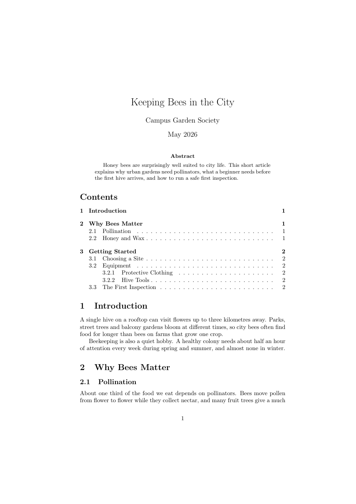
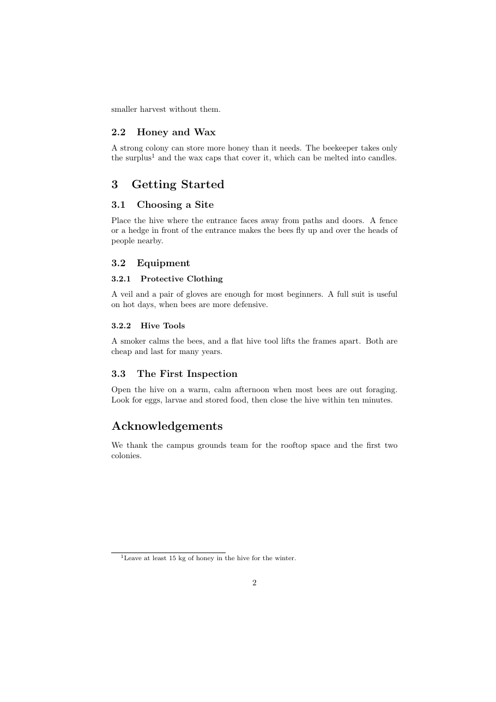

วัตถุประสงค์
เมื่อจบ Workshop นี้ นักศึกษาจะสามารถ
- แบ่งเอกสารเป็นหัวข้อหลายระดับด้วย
\section,\subsectionและ\subsubsectionได้ - สร้างหัวข้อที่ไม่มีหมายเลขด้วยคำสั่งแบบมีดอกจัน (เช่น
\section*) และอธิบายได้ว่าต่างจากหัวข้อปกติอย่างไร - สร้างสารบัญด้วย
\tableofcontentsและอธิบายได้ว่าทำไมต้องคอมไพล์ 2 ครั้ง - สร้างส่วนหัวเรื่องด้วย
\title,\author,\dateและ\maketitleพร้อมบทคัดย่อ (abstract) ได้ - เพิ่มเชิงอรรถด้วย
\footnoteได้
ไฟล์ที่ได้รับ
ดาวน์โหลด article_structure.zip แล้วแตกไฟล์ไว้ในที่ที่หาง่าย จะได้โฟลเดอร์ article_structure ดังนี้
article_structure/
├── doc.pdf ชิ้นงานต้นแบบ (2 หน้า)
├── warmup.tex ไฟล์สั้น ๆ สำหรับ Part A
├── main.tex ไฟล์เริ่มต้นสำหรับ Part B
└── content.txt เนื้อหาทั้งหมดของ Part B ไม่ต้องพิมพ์ใหม่ดูไฟล์แยกทีละไฟล์ได้ที่
warmup.tex,
main.tex,
content.txt
เตรียมเครื่อง
ประมาณ 5 นาทีใช้เครื่องมือชุดเดียวกับ Workshop การจัดรูปแบบข้อความ ได้แก่ Sublime Text เทอร์มินัล และโปรแกรมอ่าน PDF (SumatraPDF บน Windows)
- เปิดโฟลเดอร์
article_structureใน Sublime Text ด้วยเมนู File → Open Folder - เปิดเทอร์มินัลในโฟลเดอร์
article_structureแบบเดียวกับ Workshop การจัดรูปแบบข้อความ แล้วตรวจว่าเห็นไฟล์ทั้ง 4 ไฟล์Windows
PS> dirmacOS
$ lsLinux
$ ls
.toc ครั้งที่สองจึงอ่านไฟล์นั้นมาพิมพ์เป็นสารบัญ
(ใช้ลูกศรขึ้น ↑ เรียกคำสั่งเดิมได้)
อุ่นเครื่อง
ประมาณ 30 นาทีไฟล์ warmup.tex มีบันทึกสั้น ๆ เรื่องแม่น้ำ ซึ่งตอนนี้ชื่อหัวข้อเป็นเพียงย่อหน้าธรรมดา ทำทีละข้อ บันทึก คอมไพล์ และสังเกตผล
- A0 คอมไพล์ไฟล์ตามที่ได้รับ
$ pdflatex warmup.texผู้อ่านแยกออกหรือไม่ว่าบรรทัดใดเป็นชื่อหัวข้อ และบรรทัดใดเป็นเนื้อหา
- A1 เปลี่ยนบรรทัด
Where Rivers BeginและWhere Rivers Endเป็นหัวข้อระดับ 1 ด้วย\section{...}และเปลี่ยนMountain SpringsกับMelting Glaciersเป็นหัวข้อระดับ 2 ด้วย\subsection{...}LaTeX ใส่หมายเลขหัวข้อให้อย่างไร ถ้าสลับลำดับสองหัวข้อย่อย หมายเลขเปลี่ยนตามหรือไม่
- A2 เพิ่ม
\subsubsection{Snow and Rain}พร้อมประโยคสั้น ๆ ใต้หัวข้อMountain Springsหัวข้อระดับ 3 ได้หมายเลขแบบใด
- A3 สารบัญ ใส่
\tableofcontentsไว้ใต้\begin{document}แล้วคอมไพล์ครั้งเดียว เปิด PDF ดู จากนั้นเปิดไฟล์warmup.tocที่เกิดขึ้นใหม่ใน Sublime Text แล้วคอมไพล์อีกครั้งหลังคอมไพล์ครั้งแรกสารบัญมีอะไรบ้าง ไฟล์
.tocเก็บข้อมูลอะไร และทำไมครั้งที่สองจึงมีรายการครบ - A4 แก้ชื่อหัวข้อ
Where Rivers Endเป็นHow Rivers Endแล้วคอมไพล์ครั้งเดียวชื่อในสารบัญกับชื่อหัวข้อในเนื้อหาตรงกันหรือไม่ ต้องทำอย่างไรให้ตรงกัน
- A5 เปลี่ยน
Further Readingเป็น\section*{Further Reading}แล้วคอมไพล์ 2 ครั้งหัวข้อแบบมีดอกจันต่างจากหัวข้อปกติอย่างไร ทั้งเรื่องหมายเลขและสารบัญ
- A6 หัวเรื่อง ลบบรรทัด
Notes on Riversออกจากเนื้อหา แล้วเพิ่มในส่วนนำ (ก่อน\begin{document})
และใส่\title{Notes on Rivers} \author{ชื่อของนักศึกษาเป็นภาษาอังกฤษ} \date{\today}\maketitleเป็นบรรทัดแรกหลัง\begin{document}จากนั้นลองเปลี่ยนเป็น\date{}\todayให้ผลอย่างไร และ\date{}ที่ว่างเปล่าทำให้เกิดอะไรขึ้น - A7 ย้ายย่อหน้าแรก (
Rivers carry rain ...) ไปไว้ในสภาพแวดล้อมabstractระหว่าง\maketitleกับ\tableofcontentsแล้วเพิ่มเชิงอรรถท้ายคำว่าseaด้วย\footnote{The longest river in Thailand is the Mun.}หมายเลขเชิงอรรถและข้อความเชิงอรรถปรากฏที่ใดของหน้า
- A8 ทำให้ผิดโดยตั้งใจ
- สะกด
\subsectionผิดเป็น\subsectonแล้วคอมไพล์ เทอร์มินัลจะแสดง
พิมพ์ x แล้ว Enter เพื่อหยุด แล้วแก้กลับ (หมายเลขบรรทัดของแต่ละคนอาจไม่ตรงกับตัวอย่าง)! Undefined control sequence. l.17 \subsecton {Mountain Springs} ? - ใส่
%หน้าบรรทัด\title{...}แล้วคอมไพล์! LaTeX Error: No \title given. See the LaTeX manual or LaTeX Companion for explanation. Type H <return> for immediate help. ... l.8 \maketitle ?
ข้อผิดพลาดที่สองชี้ไปที่บรรทัด
อย่าลืมแก้ไฟล์กลับให้คอมไพล์ผ่านก่อนไปต่อ\maketitleแต่สาเหตุจริงอยู่ที่บรรทัดใด - สะกด
.toc คืออะไร และทำไมต้องคอมไพล์ 2 ครั้ง
(3) \section* ต่างจาก \section อย่างไร และ (4) \title กับ \maketitle ต้องอยู่ส่วนใดของไฟล์
งานหลัก
ประมาณ 60 นาทีเปิด main.tex และคัดลอกเนื้อหาจาก content.txt มาวาง เพื่อสร้างบทความ 2 หน้าให้เหมือน doc.pdf มากที่สุด คอมไพล์ 2 ครั้งด้วย
$ pdflatex main.tex
$ pdflatex main.tex

คำแนะนำ
ใน content.txt ป้ายในวงเล็บเหลี่ยมบอกระดับของหัวข้อแต่ละบรรทัด ตารางนี้บอกเฉพาะสิ่งที่ต้องใช้ ส่วนวิธีเขียนให้หาจากสไลด์หรือจาก Part A
| ส่วนของชิ้นงาน | สิ่งที่ต้องใช้ |
|---|---|
| ชื่อเรื่อง ผู้เขียน วันที่ | \title, \author, \date ในส่วนนำ และ \maketitle (วันที่เป็นข้อความคงที่ May 2026 ไม่ใช่ \today) |
| Abstract | สภาพแวดล้อม abstract |
| Contents | \tableofcontents และคอมไพล์ 2 ครั้ง |
| หัวข้อ 1, 2, 3 | \section |
| หัวข้อ 2.1, 3.1 เป็นต้น | \subsection |
| หัวข้อ 3.2.1 และ 3.2.2 | \subsubsection |
| เชิงอรรถหลังคำว่า surplus | \footnote และช่องว่างไม่ตัดบรรทัด 15~kg |
| Acknowledgements | หัวข้อระดับ 1 แบบไม่มีหมายเลขและไม่อยู่ในสารบัญ |
คำใบ้เพิ่มเติม (เปิดดูเมื่อติด)
- ไม่ต้องพิมพ์หมายเลขหัวข้อเอง LaTeX ใส่ให้อัตโนมัติ
- ถ้าสารบัญว่างหรือไม่ตรงกับหัวข้อ ให้คอมไพล์อีกครั้ง LaTeX ไม่เตือนเรื่องนี้
- ถ้าสารบัญดูแปลกหลังแก้หลายครั้ง ให้ลบไฟล์
main.auxและmain.tocแล้วคอมไพล์ใหม่ 2 ครั้ง - ชิ้นงานมี 2 หน้าพอดี โดยหน้าแรกจบที่ข้อความใต้หัวข้อ 2.1
ส่งงาน
เปลี่ยนชื่อไฟล์เป็น article_structure_<รหัสนักศึกษา>.tex แล้วคอมไพล์ใหม่ 2 ครั้งด้วยชื่อนั้น ส่งทั้งไฟล์ .tex และ .pdf
$ pdflatex article_structure_6512345678.tex
$ pdflatex article_structure_6512345678.texรายการตรวจสอบก่อนส่ง
ท้าทาย
ไม่บังคับ · ประมาณ 20–30 นาทีทำเพิ่มในไฟล์ใหม่ (คัดลอกจากงาน Part B) ข้อใดก็ได้
- C1 แบ่งบทความเป็น 2 ภาค ด้วย
\part{Background}ก่อนหัวข้อ 1 และ\part{Practice}ก่อนหัวข้อ 3หมายเลขภาคเป็นรูปแบบใด และหมายเลขหัวข้อเริ่มนับใหม่หรือไม่
- C2 เปลี่ยน
\documentclass{article}เป็น\documentclass{report}โดยไม่แก้ส่วนอื่นหัวเรื่อง บทคัดย่อ และหมายเลขหัวข้อเปลี่ยนไปอย่างไร (เตรียมตัวสำหรับ Workshop เอกสารประเภทรายงานและหนังสือ)
- C3 ย้าย
\tableofcontentsไปไว้ท้ายเอกสาร แล้วคอมไพล์ 2 ครั้งสารบัญยังถูกต้องหรือไม่ เพราะอะไร
- C4 เขียนบทความ 2 หน้าของตัวเองเป็นภาษาอังกฤษ เช่น แนะนำชมรม รีวิวสถานที่ หรือวิธีดูแลต้นไม้ โดยมีหัวข้อครบ 3 ระดับ สารบัญ บทคัดย่อ และเชิงอรรถ
ข้อผิดพลาดที่พบบ่อย
| อาการ | สาเหตุและวิธีแก้ |
|---|---|
| สารบัญว่างเปล่า มีแค่คำว่า Contents | เพิ่งคอมไพล์ครั้งแรก ให้คอมไพล์อีกครั้ง |
| สารบัญแสดงชื่อหัวข้อเก่าหรือหมายเลขหน้าผิด | แก้หัวข้อแล้วคอมไพล์ครั้งเดียว ให้คอมไพล์อีกครั้ง |
! LaTeX Error: No \title given. |
ใช้ \maketitle แต่ไม่มี \title{...} ในส่วนนำ หรือสะกดผิด |
! Undefined control sequence. ที่บรรทัดหัวข้อ |
สะกดชื่อคำสั่งผิด เช่น \subsecton หรือ \subsubection |
| หัวข้อแบบมีดอกจันหายไปจากสารบัญ | เป็นพฤติกรรมปกติ หัวข้อแบบ \section* ไม่มีหมายเลขและไม่เข้าสารบัญ |
หัวเรื่องไม่ปรากฏ แม้มี \title |
ลืม \maketitle หลัง \begin{document} |
| วันที่ของวันนี้ปรากฏใต้ชื่อผู้เขียนทั้งที่ไม่ได้ใส่ | ถ้าไม่มี \date LaTeX ใช้วันที่ปัจจุบันให้เอง ใส่ \date{...} ตามต้องการ หรือ \date{} เพื่อไม่แสดง |
| หัวข้อหรือข้อความเป็นตัวหนาทั้งหน้า | ลืมปิดวงเล็บปีกกาในหัวข้อ เช่น \section{Introduction |
แหล่งอ้างอิง
- สไลด์บทเรียน Document Structure (Sectioning, Table of Contents, Unnumbered Sections, Standard Document Classes)
- The Not So Short Introduction to LaTeX (เปิดด้วย
texdoc lshort) บทที่ 2 หัวข้อ Title, Chapters and Sections